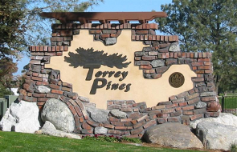

Torrey Pines, San Diego
Torrey Pines is a primarily residential community of 2,600 acres (1,100 ha) in the northern coastal area of San Diego, California.
Torrey Pines is located in the northern coastal region of the City of San Diego and is bounded by Interstate 5 on the east, the City of Del Mar and the Pacific Ocean to the west, the City of Solana Beach to the north, and the University community to the south.
Torrey Pines is located in the northern coastal region of the City of San Diego and is bounded by Interstate 5 on the east, the City of Del Mar and the Pacific Ocean to the west, the City of Solana Beach to the north, and the University community to the south.
The residential neighborhoods are situated primarily in the Del Mar Terraces and the Del Mar Heights area in the central portion of the community. Small areas of commercial development are located along two transportation corridors in the community, Del Mar Heights Road and Carmel Valley Road. Industrial development is located in the southern portion of the community within Sorrento Valley.
Torrey Pines is located in the northern coastal region of the City of San Diego and is bounded by Interstate 5 on the east, the City of Del Mar and the Pacific Ocean to the west, the City of Solana Beach to the north, and the University community to the south.
Torrey Pines is characterized by an abundance of sensitive environmental resources and contains a number of major local and regional open space parks. The community contains large areas of Torrey Pine trees, lagoons, wetlands, sandstone bluffs and canyons that provide a unique environment for those who live, work, and visit this coastal community.Torrey Pines is bordered to the north by the city of Del Mar, to the south by La Jolla, to the east by Interstate 5, Carmel Valley, Torrey Hills, the Los Peñasquitos Canyon Reserve, and Mira Mesa; and to the west by La Jolla and the Pacific Ocean for a short distance near Torrey Pines State Beach and Torrey Pines State Park.
According to January 2006 estimates by the San Diego Association of Governments, there were 6,990 people and 2,863 households residing in the neighborhood. The estimated racial makeup was 81.8% White, 8.5% Asian & Pacific Islander, 5.8% Hispanic, 2.8% from other races, 0.9% African American, and 0.2% American Indian. The median age is 45.7 with 21.3% under the age of 18 and 16% over the age of 65.
The estimated median household income was $129,687 ($101,586 adjusted for inflation in 1999 dollars); 29.4% of the community made more than $150,000; 43.6% made between $60,000 and $149,999; and 27.0% made less than $60,000.